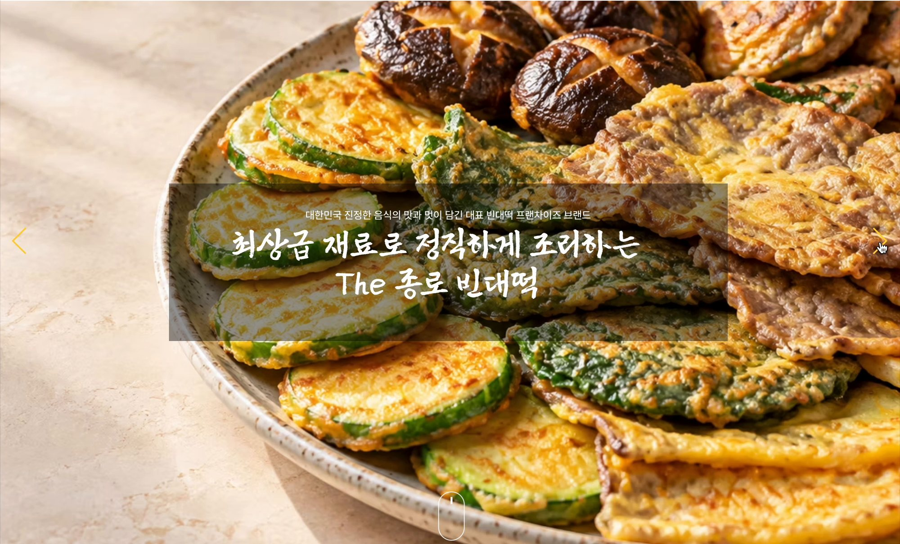
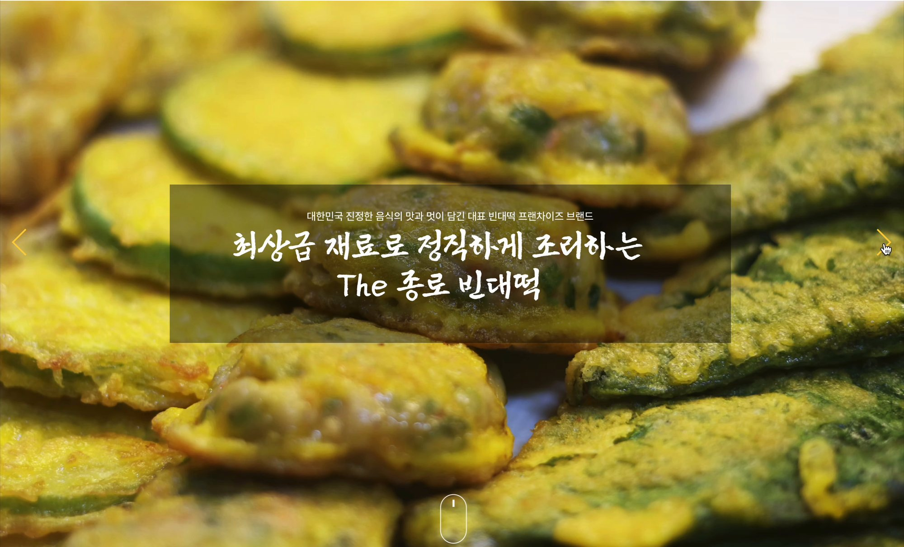
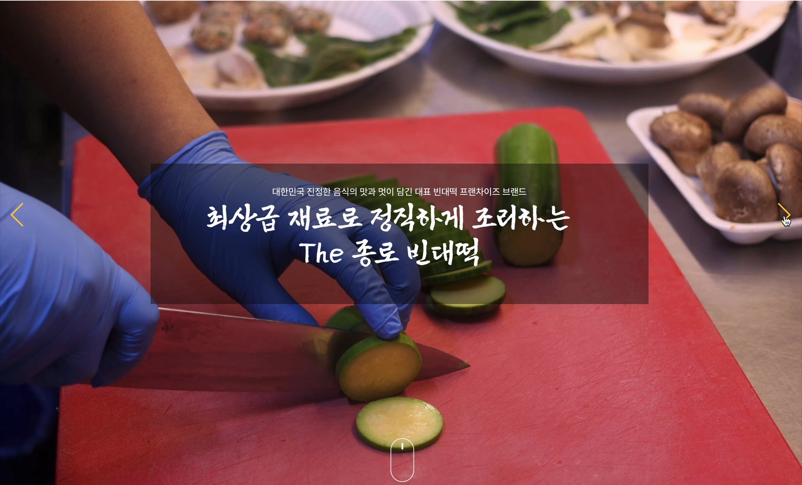

Brand Story
2008년 주안에서 시작된 브랜드로 13평 매장에서 엄청난 매출을 기록한 차별화된 종로빈대떡입니다.
2008년 주안에서 시작된 종로 빈대떡은 13평 매장에서 엄청난 매출을 기록한 차별화된 브랜드입니다. 모든 음식은 수제로 만들어지며, 본사의 까다로운 조리 교육을 받은 점주들만 운영하는 매장으로, 타 브랜드와 비교할 수 없는 맛과 실력을 자랑합니다.
자세히 보기



2008년 주안에서 시작된 브랜드로 13평 매장에서 엄청난 매출을 기록한 차별화된 종로빈대떡입니다.
2008년 주안에서 시작된 종로 빈대떡은 13평 매장에서 엄청난 매출을 기록한 차별화된 브랜드입니다. 모든 음식은 수제로 만들어지며, 본사의 까다로운 조리 교육을 받은 점주들만 운영하는 매장으로, 타 브랜드와 비교할 수 없는 맛과 실력을 자랑합니다.
자세히 보기
더 종로 빈대떡은 다른 브랜드와 차별화되는 몇 가지 점이 브랜드의 자랑입니다. 우선, 더 종로 빈대떡은 모든 음식을 수제로 만들어 신선하고 고품질의 재료를 사용하여 특별한 맛과 풍미를 제공합니다. 이는 더 종로 빈대떡이 타 브랜드와 비교할 수 없는 맛의 경험을 선사한다는 것을 의미합니다.
저는 점주님들과 함께 장사는 장사꾼이고 장사꾼으로 남고 싶습니다.
저는 본인이 직접 일을 해야 직성이 풀리는 스타일입니다.
그래서 매장 자리를 보는 일부터 오픈 날 첫 장사까지, 점주님 옆에서 같이 발로 뛰려고 합니다. 빈대떡 한 장을 부치는 방법도, 손님을 맞는 방법도 제가 직접 해 본 그대로 알려 드리겠습니다.
화려한 말보다 오래가는 가게를 함께 만들고 싶습니다. 점주님의 가게가 동네에서 비 오는 날 먼저 떠오르는 집이 되도록, 본사가 끝까지 곁에 있겠습니다.
"매일매일 신선한 재료로 만들어내는 최상급
퀄리티의 빈대떡은 우리만의 자부심입니다."
"재료의 선택부터 정교한 조리 과정까지
모든 단계에서 품질을 확인하여 최상의 맛을
보장합니다."
"저희의 전문 기술과 고품질 재료가 어우러져
탄생한 더 종로 빈대떡은 완벽한 맛을 보장합니다."
제작 당시 지점 목록입니다. 전화번호는 넣지 않았습니다.
the종로빈대떡의 가맹점주가 되시는걸 축하 드립니다.